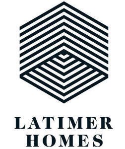

Trade Mark Journal No.2025/042 17 October 2025
UK00004274403 7 October 2025 (35,36,37,41,42,43,44)

- Class 35
- Business management services for design, construction, maintenance, installation and repair of buildings and civil engineering structures; real estate sales management; feasibility studies; project management for building, construction and civil engineering projects; advertising; organising and conducting volunteer programmes and community service projects; promotional and public awareness campaigns; information services relating to jobs and career opportunities; business research; statistical information relating to architecture, landscaping and construction; facilities management.
- Class 36
- Real estate agency, appraisal, leasing, management and brokerage; financial services relating to the acquisition of real estate and construction of buildings; accommodation letting services; real estate property and retirement housing management services; advisory and financial services, all relating to housing and accommodation development projects; housing agents; leasehold property sales; property management (including residential retirement schemes, rented properties, private developments, leasehold schemes) and generally acting in the capacity of managing agent for properties; the provision of housing through leasehold and freehold arrangements including the provision of housing to students and to key workers in the health, public and/or civic service; the management of homes including sheltered and supported accommodation; residential property leasing and property management services for landlords and/or tenants; insurance; savings and loan services; financial analysis; financial consultancy; charitable fund raising, organising of charitable collections, benevolent fund services; issuing of tokens of value; providing financial grants; providing monetary grants to charities.
- Class 37
- Building construction; building repair services; installation of windows, doors, central heating, bathrooms, kitchens, ventilation apparatus; building project management; supervision of construction, conversion and renovation of buildings; provision of maintenance services to properties being managed; insulation of buildings; household maintenance, repair, installation and support services; installation, maintenance, servicing and repair of fire, smoke and security alarms and detectors; consultancy, information and advisory services relating to all the aforesaid services.
- Class 41
- Education; providing of training; entertainment; sporting and cultural activities.
- Class 42
- Architectural services; urban planning services; civil and structural engineering services; quantity surveying and cost consulting; planning and design of buildings and structures; interior design; planning and design of building interiors; design of commercial developments; management of architectural and interior design projects; project preparation and studies.
- Class 43
- Temporary accommodation reservation services; provision of temporary accommodation; providing day care centres for the disabled or elderly.
- Class 44
- The provision of residential care homes for the elderly and/or people with a physical and/or mental disability or illness; provision of respite care; arranging of accommodation in rest homes; information and advice in respect of the aforesaid services; advice relating to the health of elderly people; providing mental health and wellness information; medical assistance services; landscaping services.
Clarion Housing Group Limited
Representative: Murgitroyd & Company